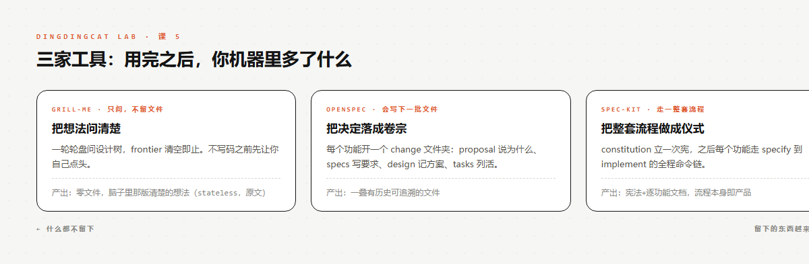
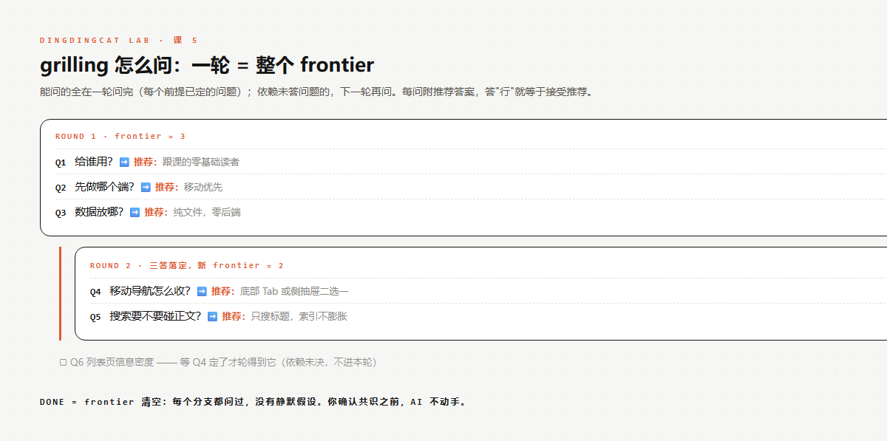

这节课讲三家帮你想清楚需求的工具。先花 10 分钟把 grill-me 装上、跑一遍，再回头看三家怎么选。先会做，再讲道理。
本课目标
- 装上第一个第三方工具包，并确认装成功了
- 跑通一次 grill-me 的提问，知道它是怎么一轮一轮问的
- 分清 grill-me / OpenSpec / spec-kit 三家各自的安装、用法和适用面
概念卡
- skill / 插件：skill 是给 AI 的一页做事规矩（SKILL.md），插件把一批 skill 打包成可整体安装的组件（官方定义：a directory of components）。装插件等于一次装一族本事。
- frontier（前沿）：grilling 的术语——当前所有"前提已定、马上能问"的问题集合。它决定了这一轮该问什么、什么必须等下一轮。
① 这节课干什么，为什么先学最轻的一家
三家干的是同一件事——开工前把想法定下来。区别只在于：用完之后，你机器里多了什么：

星数当天气温（一手仓库实测）：grill-me 所在合集 32.9 万、OpenSpec 7.5 万、spec-kit 15.1 万。这门课先教 grill-me，理由两条：它对新手的全部要求是回答问题（零新文件结构），而且它是另外两家的前置——proposal 和 specify 都得先有人把想法想清楚。
② 装上（Claude Code，一行）
claude plugin install mattpocock-skills@claude-plugins-official装没装上，怎么确认：跑一下 claude plugin list，应该能看到 mattpocock-skills@claude-plugins-official 这一行，后面跟着 Status: ✔ enabled。（我 11-21 实测，当时是 v1.3.1。）
两条官方提醒别当耳旁风：插件默认自动更新；如果你同时想用 skills.sh 那条路线——二选一，两边都装会让每个 skill 出现两遍。
③ 第一次成功：跑一轮拷问
新开一个会话再开始问（官方提醒：别在已经聊了一堆方案的旧会话里问），输入：
/grill-me 我想给网站加一个教程路径页你会看到：它不是随口问两句。它把你的想法拆成一棵决策树，每一轮把所有"现在就能问"的问题一起端出来——每题带编号，还带一条它的建议答案；问题故意这么写：你回"行"，就等于采纳了它的建议。

什么时候算问完：该问的都问完了，没有哪个问题是悄悄跳过的。问完之后有一条规矩：你没说"我们想清楚了"，AI 就不会动手写代码。
（小说明：第 7 课那场拷问实录里，我是一题一题问的——跟整轮问都属于同一棵决策树的走法，逻辑不变。哪种节奏舒服，你自己选。）
④ 何时用它
| 用它 | 别用它 |
|---|---|
| 要做新功能，开工前钉目标 | 已经能写出精确规格——不用烤，直接干（官方原话） |
| 商业方向、定价、选题的拍板 | "它该什么感觉"这类问题——问不出来，先用 prototype 做个一次性的看，回来一行就能答（官方称为 ungrillable） |
| 一篇拿不准角度的文章（不限代码，官方明说） | 别开着 plan mode 烤——它会让 AI 急着交计划，而你要它继续问（原文提醒） |
这族有三兄弟，按场合挑：grill-me——任何事任何地，不读写你的仓库；grill-with-docs——需要对齐代码库时，它会读码并把学到的沉淀成 GLOSSARY.md 和 ADR（那才是会写文件的）；wayfinder——大到一个会话装不下的工程，先画地图，地图里逐个烤。
⑤ 进阶与参考
最大的失败模式是被动产出。官方文档点名了一种假高效：四十个问题全答"同意"，出门时手里攥着 AI 写的计划——你什么都没决定，产出却显得比实际确定。正确姿势是掌舵：问题太浅就驳回，方向漂了就喊停，不知道就答"不知道"，且是认真的。结果的质量取决于你答案的质量，不是问题数量。
想留下书面结果怎么办：grill-me 本身 stateless——官方原文 "It writes no files and leaves no workspace behind. The only result is a clearer version of the idea, in your own head."——不落地任何东西，成品是你脑子里那版想清楚的想法。要落纸，这族后头接了 to-spec：它不再提问，直接把当前对话合成为 spec 并投递到 issue 跟踪器。顺序故意如此：先达成共识，再谈文档。
三家速查表（安装/用法全为一手原文）：
| grill-me | OpenSpec | spec-kit | |
|---|---|---|---|
| 装 | claude plugin install …（官方插件市场） | curl 官方脚本 / npm / brew，进项目后 openspec init | uv tool install specify-cli → specify init 项目名 --integration 你的agent |
| 用 | /grill-me + 一句话想法，按轮烤到 frontier 空 | /openspec-explore 想清楚，或 /openspec-propose 直接开 change 文件夹（proposal/specs/design/tasks 四件套） | /speckit-constitution 立宪一次，之后每个功能走 specify 起步的命令链（官方口径） |
| 用完留下 | 零文件 | 一叠可追溯的文件 | 项目宪法 + 逐功能文档 |
| 适合 | 想清楚再动 | 单人也要留档 | 要整套流程仪式 |
跟做步骤
- 跑 ② 的安装命令，
claude plugin list看到 enabled 才往下 - 新开会话，
/grill-me+ 一件你真要做的事，答完第一轮再决定继不继续 - 对照 ④ 的表，判断你那件事该用哪兄弟（多数情况 grill-me 就够）
- 问完之后，把你听到的那些决定用自己的话说一遍，让 AI 核对有没有理解偏。对了，就算达成共识——第 7 课开工材料就是它
- 想留纸：试试同插件的 to-spec
及格标准
claude plugin list 里 enabled 那一行你亲眼见过，并且你回答过至少一轮带推荐答案的编号问题——答"行"时你知道自己点头接受的是什么。
卡住了
- /grill-me 没反应：先确认 ② 的 enabled；还不成就新开一个会话（技能清单在会话启动时读）
- 它问得太顺，你全在说"同意"：停。翻回 ⑤ 第一段，那就是你正在踩的坑
- 想要的是文件不是对话：你其实需要 OpenSpec——对照 ⑤ 表直接换家，不用内疚
轮到你了
下节课网站要长出一个新物种：把需求画成界面。届时你会看到同一套"先烤后做"在 UI 环节的原样运转——而 grill-me 今晚已经在你的机器上，别让它吃灰。
深入读
- grill-me 所在合集（README 即三家安装原文，当天验活）：https://github.com/mattpocock/skills
- grilling 官方文档页（rounds/frontier/passivity 的出处，当天验活）：https://github.com/mattpocock/skills/blob/main/docs/productivity/grill-me.md
- OpenSpec（当天验活）：https://github.com/Fission-AI/OpenSpec
- spec-kit（当天验活）：https://github.com/github/spec-kit